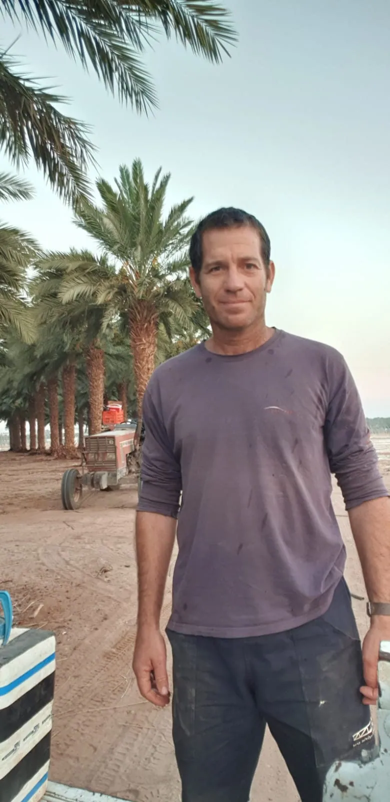

רן שדה
יו"ר העמותהנשוי לאמנה ואבא לחמישה ילדים. נולדתי וגדלתי במושב חצבה, למשפחה חקלאית. אחרי השחרור מצה"ל (4 שנים כלוחם ביחידת שלדג) וקורס מדריכי טיולים של החברה להגנת הטבע, סיימתי תואר באגרונומיה בפקולטה לחקלאות וחזרתי למשק החקלאי במושב. מאז אני עובד כחקלאי ומנהל בשותפות המשפחתית. ב-2008 התחלתי להקים ולגבש קבוצת חברים מהערבה התיכונה, במטרה להקים את עמותת בין השיטין, את מכינות הערבה ואת שאר תכניות העמותה.
מאז אני משמש יו"ר העמותה בהתנדבות. הישגי העמותה, פעילותה הענפה והמשמעותית, ומנהליה ועובדיה המוכשרים והמסורים ממלאים את כולנו סיפוק רב וחדוות עשייה חברתית וחינוכית כאן בערבה.